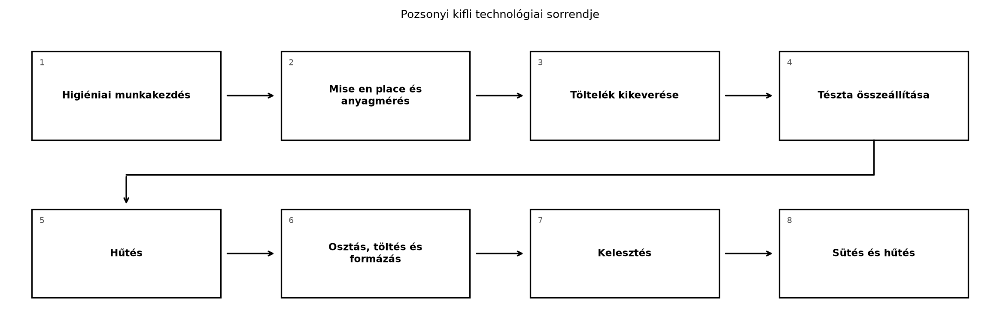

Egy cukrászüzemben a reggeli termelési tervet nem elég „szemre” összeállítani. Ha a rendelésben 60 sajtos pogácsa, 48 pozsonyi kifli és 40 diós beigli szerepel, akkor pontosan tudni kell, mennyi lisztet, vajat, élesztőt és töltelékalapanyagot kell kiadni a raktárból. Aki nem számol, az vagy kifut a nyersanyagból, vagy felesleget termel, amelyet este selejteznie kell. A számítás akkor is kell, ha a munkatársnak adjuk át a gyártási lapot: abból derüljön ki, hány darabot, milyen darabtömeggel és milyen veszteséggel kell sütni.
Az uzsonnasüteményeknél különösen fontos a darabtömeg, mert a vendég darabot vásárol, és a jogszabályi tömegtűrés alatti termék fogyasztóvédelmi hibának számít. A technológiai lap pedig a higiéniai, allergén- és tárolási szabályokkal együtt ad teljes gyártási utasítást. Az itt bemutatott számítást később a Munkaszervezés és a cukrászüzem munkafolyamatainak tervezése alfejezetben termeléstervezésre, a vizsgán pedig komplex feladatként fogjuk használni.
Tegyük fel, hogy egy kis cukrászműhely hétfő reggelre az alábbi rendelést kapja:
| Termék | Rendelt (db) | Nyers tömeg (g/db) | Sütési veszteség (%) |
|---|---|---|---|
| Sajtos pogácsa | 60 | 45 | 12 |
| Pozsonyi kifli | 48 | 90 | 12 |
| Diós beigli | 40 | 350 | 15 |
A nyers tömeg az a formázott, tepsire tett darab tömeg, amelyet még nem sütöttünk. A sütési veszteség azt fejezi ki, hogy a víz egy része elpárolog, ezért a kész termék könnyebb lesz. A veszteséget mindig a nyers tömegre vonatkoztatjuk.
A szemléletes képhez elég az első sor: 60 db pogácsa nyers tömege . Ha a sütési veszteség 12 %, akkor a kész tömeg . A darabok tehát sütés után körülbelül -osak lesznek. Ugyanezt a logikát visszük végig a teljes sorozatra.
Definíció. — Uzsonnasütemény-sorozat
anyaghányada.
Azt mutatja meg, hogy egy adott rendelés vagy gyártási tétel
elkészítéséhez mennyi nyersanyagot kell kiadni, és mennyi készterméket
kapunk a sütési, formázási és tömegveszteségek után.
Összefüggés. — Kész tömeg a veszteség után.
Ha a sütési veszteséget
% jelöli, akkor
Az a formázott, még nem sütött termék tömege, pedig a sütés utáni, visszamért tömeg.
Összefüggés. — Kihozatal és sütési veszteség.
A kihozatal az
és
tömeg aránya százalékban:
Összefüggés. — Darabszám és darabtömeg.
Ha
darabot készítünk, és egy formázott darab nyers tömege
,
akkor
Szabály. — Tészta- és töltelékarány.
Töltött uzsonnasüteménynél, például a pozsonyi kiflinél vagy a
beiglinél, a nyers tömeg tésztából és töltelékből áll. Ha a töltelék
arányát
%-nak írjuk elő, akkor
Az arányt mindig ugyanarra az alapra vonatkoztassuk. Ha a recept a tölteléket a nyers tésztához adja, akkor a százalék is a nyers össztömeghez tartozik; ha a késztermékre adja, akkor ahhoz.
Példa.
A rendelés 40 db diós beigli. Egy formázott beigli nyers tömege 350 g, a
mért sütési veszteség 15 %. Mennyi lesz a kész tömeg, és mekkora lesz
egy beigli kész darabtömege?
Adott:
,
,
.
Keresett:
és
.
Képlet:
Behelyettesítés:
Ellenőrzés: a veszteség , ami a nyers tömeg 15 %-a. Egy beigli kész darabtömege tehát körülbelül 297 g. ∎
Most a bevezető sorozatot számoljuk végig. A tészta- és töltelékarány legyen a következő tanulási érték:
A sütési veszteséget a teljes formázott termékre mérjük. A töltelékek is veszíthetnek nedvességet, ezért a pontos százalékot az üzemi mérés alapján kell rögzíteni (ellenőrizendő: saját technológiai lap).
Számítás.
Készítsünk tömegtáblázatot:
| Termék | Nyers tömeg (kg) | Kész tömeg (kg) | Tészta (kg) | Töltelék (kg) |
|---|---|---|---|---|
| Sajtos pogácsa | 2,700 | 2,376 | 2,700 | 0,000 |
| Pozsonyi kifli | 4,320 | 3,802 | 3,240 | 1,080 |
| Diós beigli | 14,000 | 11,900 | 8,400 | 5,600 |
| Összesen | 21,020 | 18,078 | 14,340 | 6,680 |
A pogácsa:
A pozsonyi kifli:
A beigli:
Ellenőrzés: a tészta és a töltelék összege , azaz a teljes nyers tömeg. A teljes sorozat vesztesége:
A késztermék-kihozatal tehát körülbelül 86 %. ∎
A teljes lánc – darabszám × nyers darabtömeg → sütési veszteség → tészta/töltelék arány → 1 kg lisztből nyert tészta → liszt- és vajigény – egy táblázatban is végigszámolható; az alábbi ábra a fejezet adataival kitöltött számítási táblázatot mutatja. A HTML-változatban a sorok szerkeszthetők, saját rendelés is kiszámolható.
A gyakorlatban nem elég a tészta- és tölteléktömeget tudni; a raktárnak lisztet, vajat, élesztőt kell kiadni. Ehhez a tésztareceptet 1 kg liszthez viszonyítjuk, és kiszámítjuk, hogy 1 kg lisztből mennyi tészta keletkezik.
Az Omlós élesztős uzsonnasütemények: pozsonyi kifli, beigli, pogácsák alfejezet technológiai lapjai alapján az alábbi tanulási anyaghányadokat használjuk:
Ezek a tészták pontos összetételét a terméktörzskönyv és a gyártmánylap rögzíti (ellenőrizendő: üzemi receptúra). A lenti értékek tanítási célúak.
Számítás.
A szükséges lisztet úgy kapjuk, hogy a szükséges tésztatömeget elosztjuk
az 1 kg lisztből kapott tésztatömeggel:
| Termék | Tészta (kg) | 1 kg lisztből nyert tészta (kg) | Liszt (kg) | Vaj (kg) |
|---|---|---|---|---|
| Sajtos pogácsa | 2,700 | 1,827 | 1,478 | 0,591 |
| Pozsonyi kifli | 3,240 | 2,175 | 1,490 | 0,745 |
| Diós beigli | 8,400 | 1,787 | 4,701 | 1,645 |
| Összesen | — | — | 7,669 | 2,981 |
A pogácsa lisztigénye:
A beigli lisztigénye:
A vaj mennyiségét a tészta vajtartalmából számoljuk. A példában a vaj a liszt 40%-a a pogácsánál, 50%-a a pozsonyi kiflinél és 35%-a a beigli tésztájánál. A teljes sorozat lisztigénye körülbelül 7,67 kg, vajigénye körülbelül 2,98 kg. A többi anyagot ugyanezzel a szorzószámmal kell átszámolni.
Megjegyzés.
A számítás során az anyaghányadokat mindig grammra kerekítve írjuk be a
technológiai lapra, de a gyártási kalkulációban a kerekítés előtti
értékekkel dolgozunk. A töltelék anyagszükségletét ugyanígy a
töltelékarányból és a töltelékreceptből számítjuk.
A következő technológiai lap egy 24 darabos pozsonyi kifli gyártását mutatja be. Termék neve, termékcsoport, alapmennyiség: diós pozsonyi kifli; omlós élesztős uzsonnasütemény; 24 db, 90 g/db nyersen. A hagyományőrző termék pontos eredeti receptúrája gyűjteményenként eltérhet, ezért a lenti arány tanulási célt szolgál (ellenőrizendő: a hazai szakmai testület receptgyűjteménye vagy a terméktörzskönyv).
Munkaruha, hajháló, ékszer levétele, kézmosás. Az asztalok, tepsik, nyújtódeszka, kés, mérleg tiszták és fertőtlenítettek. A tojást csak ellenőrzött, ép héjú, azonosított tételből használjuk. A diót és a lisztet átvételkor tételazonosító (LOT) szerint azonosítjuk, és megőrizzük a tétel nyomon követhetőségi adatait.
| Nyersanyag | Mennyiség (g) | Megjegyzés |
|---|---|---|
| Búzaliszt | 745 | tésztához |
| Vaj | 372 | tésztához, hűtött, kockázott |
| Tejföl | 298 | tésztához |
| Friss élesztő | 45 | tésztához, vagy 15 g szárított élesztő |
| Kristálycukor | 60 | tésztához |
| Só | 11 | tésztához |
| Tojássárgája | 89 | tésztához, körülbelül 5 közepes darab |
| Dió | 300 | töltelékhez |
| Porcukor | 180 | töltelékhez |
| Tej | 50 | töltelékhez |
| Méz | 5 | töltelékhez |
| Citromhéj | 5 | töltelékhez, reszelt |
| Összesen tészta + töltelék | 2160 | 24 db, 90 g/db nyersen |
A kenéshez használt tojás nincs beleszámítva a tészta és töltelék tömegébe.
Digitális mérleg, dagasztótál vagy kis dagasztógép, tésztaosztó kés, sodrófa, tiszta munkalap, ecset, tepsik, sütő, hűtő, rács a hűtéshez.
Biztonsági korlát.
Dagasztógépet csak oktatás után, felügyelet mellett kezelünk. A gép
járása közben kézzel soha nem nyúlunk a tálba. Forró tepsit, sütőajtót
száraz konyharuhával fogunk, és az égési sérüléseket elsősegélynyújtás
szerint látjuk el. Otthon háztartási géppel, kis adagban
gyakorolhatunk.
Mise en place.
Mérjük ki az összes tésztához és töltelékhez szükséges anyagot. A vajat
hidegen, kockákra vágva tesszük félre. A diót finomra daráljuk.
Töltelék kikeverése.
A diót, porcukrot, mézet, tejjel és citromhéjjal keverjük össze. A
massza legyen kenhető, de ne folyjon. Osszuk 24 egyenlő, körülbelül
22–23 g-os adagra.
Tészta összeállítása.
A lisztet, a sót, a cukrot és a hideg vajat keverjük el. Adjuk hozzá a
tejfölt és a tojássárgáját. Az élesztőt kevés langyos tejfölben vagy
cukros tejben oldjuk fel, és a masszához adjuk. Csak addig keverjük,
amíg a tészta egynemű lesz. Az omlós élesztős tésztát nem szabad
túlgyúrni, mert a vaj elkenődik, és a tészta rágós lesz.
Hűtés.
A tésztát fóliával letakarva hűtőben pihentetjük 30–40 percig,
körülbelül 4–6 °C-on (ellenőrizendő: a tészta mérete és a hűtő
teljesítménye szerint). Ettől a vaj ismét megdermed, és a
tészta könnyebben nyújtható.
Osztás.
A tésztát 24 egyenlő, körülbelül 67–68 g-os darabra osztjuk. Mérleggel
ellenőrizzük az egyenletességet.
Formázás.
Minden darabot ovális lappá nyújtunk, közepére tesszük a diós
tölteléket, feltekerjük, és patkó vagy kifli alakúra hajlítjuk. A
széleket jól zárjuk, hogy a töltelék ne folyjon ki.
Kelesztés.
A megformázott darabokat sütőpapíros tepsire rakjuk, letakarva, 25–28
°C-on kelesztjük 20–30 percig. A felületet nedvesen tartjuk, hogy ne
száradjon ki.
Kenés és sütés.
A tetejét felvert tojással vékonyan megkenhetjük. Sütés 180–200 °C-on,
18–22 percig, aranybarnára (ellenőrizendő: a sütő típusa és a
tepsi mérete szerint).
Hűtés.
A kész kifliket rácsra szedjük, és 30 °C alá hűtjük. Csak ezután
csomagoljuk vagy tálaljuk, hogy a pára ne puhítsa fel a
felületet.

Hőkezelés.
A tészta tojássárgáját és a tölteléket a sütés hőkezeli. A sütőből
kikerülő termék maghőmérséklete a tanulási gyakorlat szerint legalább 90
°C legyen (ellenőrizendő: hatályos útmutató és
terméklap). Ha a darab közepe nyers, azonnal tovább kell
sütni.
Hűtés a sütés után.
A kész kifliket legfeljebb körülbelül 2 órán belül hűtsük 30 °C alá. A
lassú hűlés párakicsapódást okoz, ami kedvez a penésznek.
Allergénkezelés.
A diós töltelék erős allergén. A diós és nem diós termékeket külön
munkalapon, külön eszközökkel készítsük, vagy a diós termék után
alaposan mossunk és fertőtlenítsünk.
Jogszabály.
A termék összetevőiről és allergénjeiről a fogyasztót az 1169/2011/EU
rendelet szerint kell tájékoztatni. A termék megnevezésére és a
hagyományos összetételre a Magyar Élelmiszerkönyv cukrászati termékekre
vonatkozó előírásait kell figyelembe venni (ellenőrizendő:
aktuális MÉ-előírás és jelölési útmutató).
A 14 jelölendő allergéncsoport közül ebben a termékben a glutén (búzaliszt), a tojás, a tej (tejföl, vaj, tej) és a diófélék (dió) szerepel. Keresztszennyeződésként előfordulhat más dióféle, szezám vagy földimogyoró, ha a műhelyben ezeket is feldolgozzák. A „nyomokban” jelölést csak akkor tüntessük fel, ha a HACCP-értékelés szerint a keresztszennyeződés ténylegesen nem zárható ki.
Kihűlve, lefedve, száraz, hűvös helyen 1–2 napig; hűtve 3–5 napig; fagyasztva hosszabb ideig (ellenőrizendő: terméklap, NÉBIH-útmutató); ez összhangban van az Omlós élesztős uzsonnasütemények: pozsonyi kifli, beigli, pogácsák beigli-lapjával.
A gyártás során három ponton ellenőrzünk:
Nyers tészta osztásakor.
Minden tésztadarab 67–68 g, minden töltelékadag 22–23 g. A tömegeltérést
azonnal javítjuk.
Sütés után.
A visszamért darabtömeg ne térjen el nagyobb mértékben, mint amit a
technológiai lap megenged. A 24 darabos minta átlagát és a legkisebb,
legnagyobb darabot is érdemes feljegyezni.
Tálalás vagy csomagolás előtt.
A kihűlt terméket érzékszervileg ellenőrizzük: nincs-e égett, repedt,
kifolyt töltelékű, nyers belsejű darab. Az ilyen darabot nem hozzuk
forgalomba.
Hiba 1. A kifli belseje nyers, a felülete már erősen
barna.
Lehetséges ok: túl magas sütőhőmérséklet, túl vastag tészta, vagy a
tészta túl hideg a sütőbe téve. A felület hamar barnul, a belső nem éri
el a kellő hőmérsékletet.
Megelőzés: a receptben megadott sütőhőmérsékletet és a darab méretet
tartsuk be. Sütés előtt ellenőrizzük a sütőt, és az első tepsinél
próbavágással nézzük meg az átsülést.
Hiba 2. A kész darab tömege lényegesen kisebb a
tervezettnél.
Lehetséges ok: hosszabb ideig vagy magasabb hőmérsékleten sült, ezért a
veszteség nagyobb a tervezettnél.
Megelőzés: a sütési időt és a hőmérsékletet rögzítsük a technológiai
lapon, és a sorozat elején mérjünk vissza három darabot. Ha a veszteség
tartósan magasabb, a terméktörzskönyvben korrigálni kell a nyers
darabtömeget vagy a sütési paramétereket.
Hiba 3. A töltelék kifolyik a kifliből.
Lehetséges ok: túl sok töltelék, túl híg töltelék, rosszul zárt szélek,
vagy a kelesztés közben a tészta nem tartja meg a formát.
Megelőzés: a töltelék ne legyen folyós, a széleket jól zárjuk, és a
formázott darabot a tepsire zárással lefelé fektessük, ha a forma úgy
kívánja.
Egy cukrászüzemben a decemberi időszakban 120 beigli rendelést kell teljesíteni. A tulajdonos ifjabb munkatársa „úgyis elég” alapon becsült lisztet és diót, ezért a termelés délutánjára elfogyott a diós töltelék, és az utolsó tíz beiglit mákos változatban kellett volna kisütni, de a vendég kifejezetten diósat rendelt. A hibás becslés miatt a teljes rendelést nem tudták volna határidőre átadni.
A helyes megoldás: a rendelés felvételekor a darabszámot megszorozzuk a nyers darabtömeggel, kiszámoljuk a tészta- és tölteléktömeget, majd az 1 kg liszthez viszonyított anyaghányadból meghatározzuk a liszt- és diószükségletet. A kapott értékhez a tárolási, formázási és szeletelési veszteséget is hozzáadjuk, és a raktárt legalább az így kapott mennyiséggel készítjük elő. A termelés végén a visszamért kész tömeg és a selejt alapján a terméklapot frissítjük, hogy a következő sorozat még pontosabb legyen.
1. (igaz/hamis) Ha a sütési veszteség 15 %, akkor
100 kg nyers tésztából 85 kg kész süteményt kapunk.
2. (igaz/hamis) A tészta- és töltelékarány százalékát
tetszés szerint lehet egyszer a nyers, egyszer a kész tömegre
számolni.
3. (számolás) Hány kilogramm kész süteményt kapunk 80
db, 50 g-os nyers pogácsából, ha a sütési veszteség 12 %?
4. (hibakeresés) Egy beigli gyártásakor a nyers
darabtömeg pontos, a sütési veszteség mégis 18 % a tervezett 12 %
helyett. Mi lehet az ok?
5. (sorrend) Rendezd helyes sorrendbe: kelesztés,
hűtés, osztás, tészta összeállítása, sütés, formázás.
6. (allergének) Melyik fő allergéneket kell jelölni a
diós pozsonyi kiflinél?
1. feladat (A)
Írd fel a kész tömeg, a kihozatal és a sütési veszteség összefüggését.
Magyarázd el egy mondatban, miért fontos ez az
uzsonnasütemény-gyártásban.
2. feladat (A)
Egy tételben 50 db sajtos pogácsa készül. A formázott darabok nyers
tömege 46 g/db, a sütési veszteség 13 %. Számítsd ki a kész össztömeget
és az egy darabra jutó kész tömeget.
3. feladat (B)
Egy sorozat három termékből áll:
Számítsd ki a teljes nyers és kész tömeget, valamint a sorozat átlagos sütési veszteségét.
4. feladat (B)
A beigli tésztájához 8,4 kg tészta szükséges. Ha 1 kg lisztből 1,787 kg
tészta készül, és a tészta vajtartalma a lisztre vetítve 35 %, számítsd
ki a liszt- és vajszükségletet.
5. feladat (C)
Egy üzemben a pozsonyi kifli kész darabtömege tartósan 72 g, a
technológiai lap viszont 79 g-ot ír elő. A tészta- és töltelékadagolás
pontos, a sütő hőmérséklete pedig a recept szerinti. Milyen három dolgot
ellenőriznél a hiba megtalálásához?
6. feladat (D)
Készíts el 24 db diós pozsonyi kiflit a technológiai lap szerint. Tölts
ki egy egyszerű gyártási naplót: tétel azonosítója, dátum,
nyersanyag-tételek, sütő hőmérséklete, sütési idő, visszamért kész
tömeg, darabtömeg, megjegyzés. Értékeld a készterméket a minőségi
jellemzők alapján.
Igaz.
.
Hamis.
Az arányt mindig ugyanarra az alapra kell vonatkoztatni, különben a
tészta- és tölteléktömeg elcsúszik.
nyers tömeg.
kész tömeg.
Ha a nyers darabtömeg pontos, de a veszteség nagyobb, akkor valószínűleg túl magas a sütőhőmérséklet, túl hosszú a sütési idő, vagy a tészta a formázás, kelesztés során kiszárad. Ellenőrizni kell a sütőt, az időt, a tepsi elhelyezését és a kelesztőben mért páratartalmat.
Helyes sorrend: tészta összeállítása, hűtés, osztás, formázás, kelesztés, sütés.
Glutén, tojás, tej, diófélék. Keresztszennyeződés esetén más olajos magvak, szezám, földimogyoró is feltüntethető.
1. feladat (A)
A kész tömeg:
A kihozatal:
a sütési veszteség pedig . Azért fontos, mert a darabtömeg és a nyersanyagigény csak így tervezhető pontosan.
2. feladat (A)
Adott:
,
,
.
Tehát a kész össztömeg körülbelül 2,0 kg, egy darab pedig 40 g. ∎
3. feladat (B)
Pogácsa:
Leveles csiga:
Beigli:
Összes nyers tömeg:
Összes kész tömeg:
Átlagos sütési veszteség:
Ellenőrzés: a kész tömeg a nyers tömeg 86 %-a. ∎
4. feladat (B)
A liszt:
A vaj:
5. feladat (C)
Ellenőrizni kell:
Ha a tészta- és töltelékadagolás pontos, akkor a nagyobb veszteség leginkább a sütésből vagy a mérésből ered.
6. feladat (D)
Az értékelés szempontjai: a 24 db kifli egyenletes alakú, a töltelék nem
folyik ki, a felület aranybarna, a visszamért kész tömeg átlagosan
körülbelül 79 g/darab, a metszet átsült, az íz vajas és diós. A gyártási
naplóban szerepelnie kell a tételazonosítónak, a nyersanyag tételeinek,
a sütési hőmérsékletnek, az időnek, a kész tömegnek és a
megjegyzésnek.
Az uzsonnasütemény-sorozat anyaghányad-számítása a rendelt darabszámból, a nyers darabtömegből és a sütési veszteségből indul. A kész tömeg képlete . Töltött terméknél a nyers tömegből tészta- és töltelékarányt számolunk, és a százalékot mindig ugyanarra az alapra vonatkoztatjuk. A raktári anyagszükségletet az 1 kg liszthez viszonyított tésztakihozatalból kapjuk: a szükséges tésztatömeget elosztjuk az 1 kg lisztből nyert tésztatömeggel.
A teljes technológiai lap tartalmazza az anyaghányad-táblázatot, a higiéniai munkakezdést, a műveleti sorrendet, a kritikus pontokat, az allergéneket, a minőségi jellemzőket és a tárolást. A pozsonyi kifli példájában a tésztát hideg vajjal, tejföllel, élesztővel és tojássárgájával készítjük, hűtve pihentetjük, daraboljuk, töltjük, kelesztjük és aranybarnára sütjük. A dió erős allergén, ezért külön eszközöket vagy alapos takarítást igényel. A kész terméket csak mérés után, lehűtve szabad forgalomba hozni.
Továbbvitt eredmény: az itt bemutatott darabszám-, darabtömeg-, veszteség- és anyaghányad-számítást a Munkaszervezés és a cukrászüzem munkafolyamatainak tervezése alfejezetben termelési tervre, a kalkulációs és vizsgafeladatokban pedig teljes receptúra-átszámításra használjuk.
A hivatkozott jogszabályok típusa: 1169/2011/EU rendelet a fogyasztók tájékoztatásáról, 852/2004/EK rendelet az élelmiszer-higiéniáról, a Magyar Élelmiszerkönyv cukrászati termékekre vonatkozó előírásai, NÉBIH jó higiéniai gyakorlat útmutatói. Ellenőrizendő: a pozsonyi kifli és a többi termék üzemi vagy szakiskolai receptúrája, a pontos sütőhőmérséklet és idő, a sütő maghőmérsékleti követelménye, a tárolási idő, valamint az aktuális allergénjelölési gyakorlat. A hagyományőrző termék eredeti arányait a terméktörzskönyv vagy szakmai testület receptgyűjteménye szerint kell ellenőrizni.